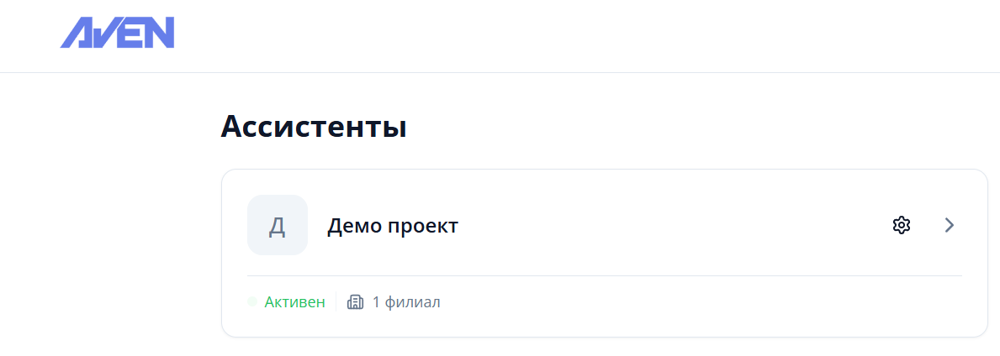
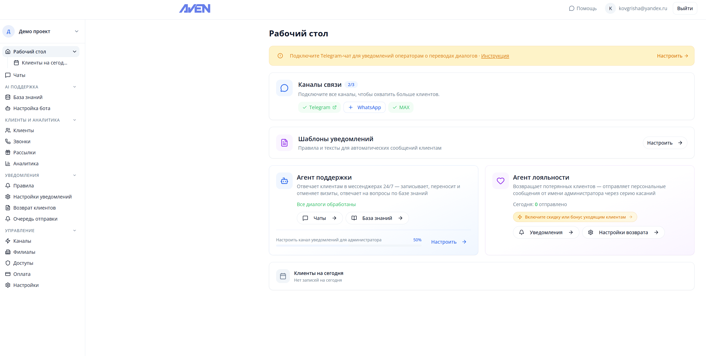
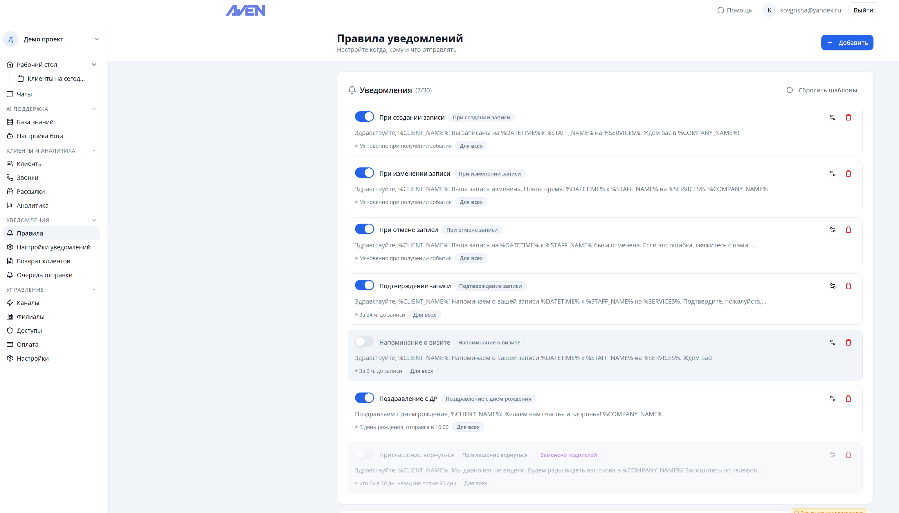
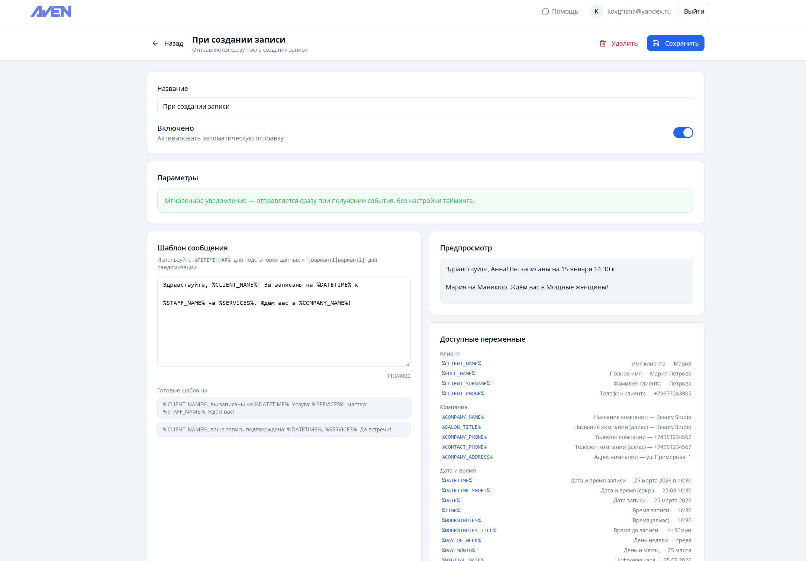
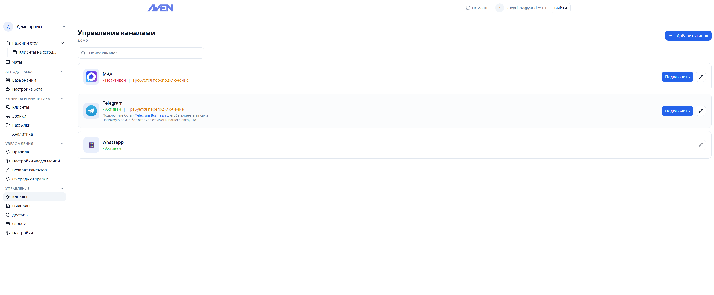
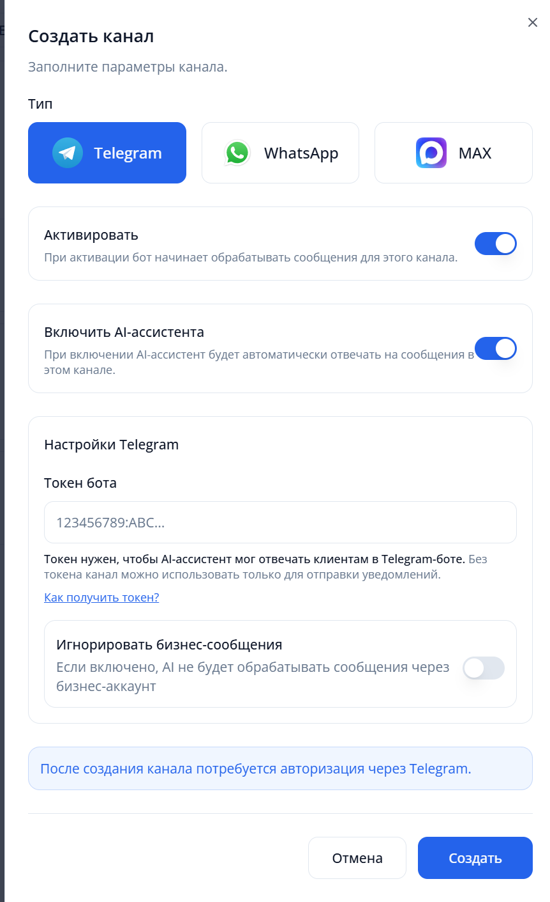
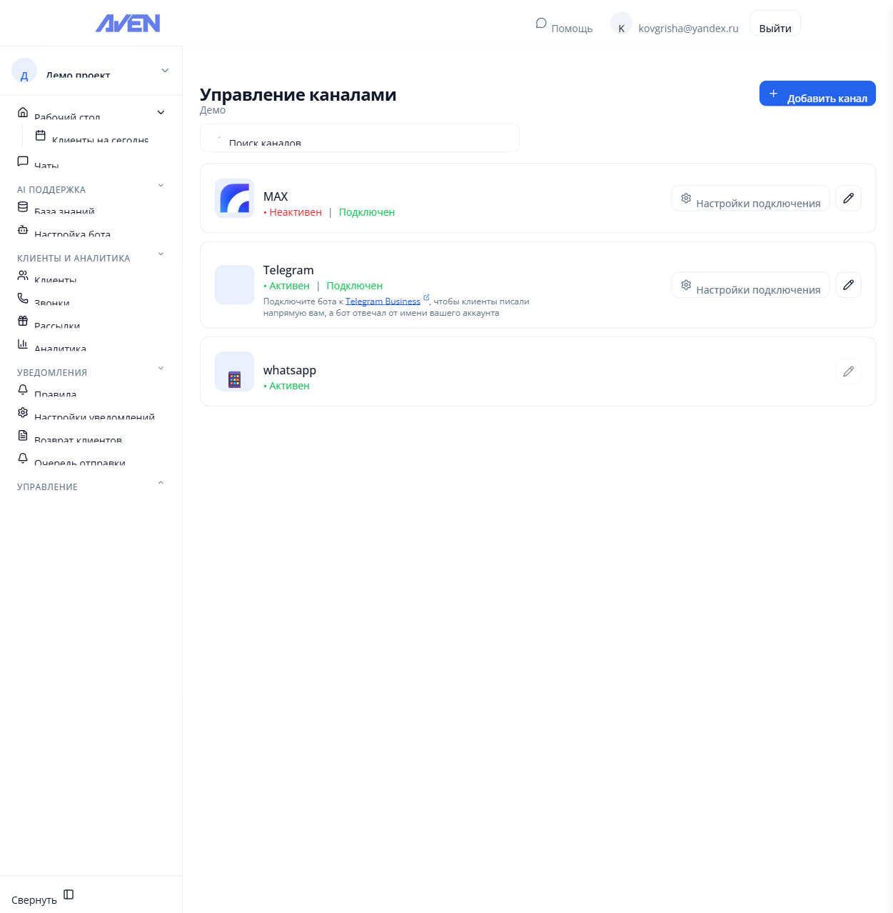
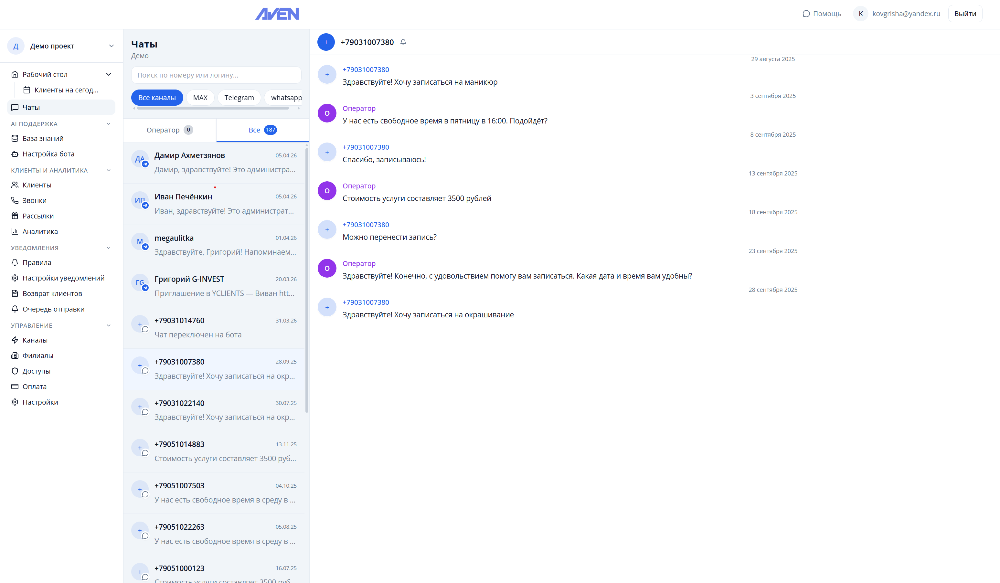

Начало работы
Добро пожаловать в документацию AvenBot — вашего надёжного ИИ-ассистента для бизнеса!
AvenBot помогает автоматизировать процессы обработки сообщений, повысить эффективность общения с клиентами и улучшить качество обслуживания.
Наш сервис предлагает интеллектуальные решения для работы с популярными мессенджерами Telegram, WhatsApp и Max.
Возможности
ИИ-ассистент отвечает на сообщения клиентов 24/7
Работа с Telegram, WhatsApp и Max
Подключение к YClients
Настройка бота под специфику вашего бизнеса
Гибкая настройка каскадных уведомлений
Быстрый старт
Перейдите на платформу AvenBot или установите приложение в YClients.
- Подключение к YClients
- Создание ассистента
- Настройка уведомлений
- Подключение каналов связи: Telegram, WhatsApp, Max
- Мониторинг чатов
Подключение к YClients
Перейдите в маркетплейс YClients и найдите приложение AvenBot, либо откройте platform.avenbot.ru и нажмите кнопку "Подключить"
Скриншот: yclients-step1.png (нужно предоставить)В появившемся окне нажмите "Продолжить"
Скриншот: yclients-step2.png (нужно предоставить)Авторизуйтесь через Яндекс аккаунт
Скриншот: yclients-step3.png (нужно предоставить)После авторизации нажмите кнопку для создания ассистента
Скриншот: yclients-step4.png (нужно предоставить)
Создание ассистента
Заполните название компании и выберите филиал
Скриншот: assistant-step1.png (нужно предоставить)После создания ассистент появится в списке

Дождитесь завершения инициализации ассистента

Настройка уведомлений
Перейдите на вкладку "Правила" — здесь находятся базовые шаблоны уведомлений

Настройте каскад уведомлений под ваши нужды

Подключение Telegram
Перейдите в раздел "Каналы"

Нажмите "Добавить канал" и выберите тип Telegram

Создайте канал — если нет бот-токена, система предложит привязку через номер
Скриншот: telegram-setup-step3.png (нужно предоставить)Отсканируйте QR-код для авторизации
Скриншот: telegram-setup-step4.png (нужно предоставить)
Подключение Max
Перейдите в раздел "Каналы" и выберите тип Max

Отсканируйте QR-код в приложении Max для авторизации
Скриншот: max-step2.png (нужно предоставить)
Подключение WhatsApp
Подробная инструкция из 8 шагов по подключению WhatsApp.
- Перейдите на страницу управления ботами
- Выберите "Каналы"
- Нажмите кнопку "+ Добавить канал"
- Выберите "Тип" → WhatsApp и нажмите "Создать"
- Появится новый канал WhatsApp
- Нажмите на кнопку с QR-кодом
- Отсканируйте QR-код через приложение WhatsApp
- После успешного добавления отобразится статус подключения
Скриншоты для этого раздела уже есть в репозитории.
Мониторинг чатов
На вкладке "Чаты" вы можете отслеживать все диалоги и проверять доставку уведомлений.

Telegram бот + Business
Для корректной работы бота у вас должен быть подключён Telegram Premium.
Создание бота
- Перейдите в @BotFather
- Запустите мини-приложение и выберите добавление нового бота
- Заполните все поля, после нажмите "Создать бота"
- Включите Business mode в настройках бота
- Скопируйте токен бота
Подключение Telegram Business
- Добавьте новый канал связи на платформе
- Вставьте токен бота в поле настроек
- В Telegram перейдите в "Telegram Бизнес"
- Перейдите в "Чат боты"
- Добавьте ссылку на бота и включите все 1-2-1 сообщения
Скриншоты для этого раздела уже есть в репозитории.
Уведомления в Telegram
Для получения уведомлений о переводах на оператора необходимо настроить групповой чат с ботом.
Создание группы
- Откройте Telegram и создайте новую группу
- Добавьте в группу бота @ProdAvenAdminBot
- Отправьте команду
/get-id - Скопируйте ID чата (включая знак минус)
- Вставьте ID в настройках бота на платформе
Получение уведомлений
После настройки бот будет автоматически отправлять уведомления в групповой чат при переводе на оператора и напоминание через 24 часа.
Скриншоты для этого раздела уже есть в репозитории.
Список необходимых скриншотов
Полный перечень скриншотов для документации. Зелёным отмечены уже имеющиеся, красным — те, которые нужно предоставить.
1. Подключение к YClients
НУЖЕН —
yclients-step1.pngМаркетплейс YClients с кнопкой "Подключить"
НУЖЕН —
yclients-step2.pngОкно подтверждения подключения AvenBot к YCLIENTS
НУЖЕН —
yclients-step3.pngОкно авторизации через Яндекс
НУЖЕН —
yclients-step4.pngЭкран создания ассистента после авторизации
2. Создание ассистента
НУЖЕН —
assistant-step1.pngФорма создания ассистента (название компании, выбор филиала)
ЕСТЬ —
assistant-step2.pngСписок ассистентов
ЕСТЬ —
assistant-step3.pngСтатус инициализации ассистента
3. Настройка уведомлений
ЕСТЬ —
notifications-step1.pngСтраница "Правила уведомлений"
ЕСТЬ —
notifications-step2.pngНастройка каскада уведомлений
4. Подключение Telegram
ЕСТЬ —
telegram-setup-step1.pngСтраница управления каналами
ЕСТЬ —
telegram-setup-step2.pngВыбор типа канала
НУЖЕН —
telegram-setup-step3.pngСоздание канала Telegram (привязка через номер телефона)
НУЖЕН —
telegram-setup-step4.pngQR-код для авторизации в Telegram
5. Подключение Max
ЕСТЬ —
max-step1.pngВыбор типа Max в каналах
НУЖЕН —
max-step2.pngQR-код для авторизации в Max
6. Мониторинг чатов
ЕСТЬ —
chats-overview.pngСтраница мониторинга чатов
Итого нужно предоставить: 8 скриншотов
yclients-step1.png— Маркетплейс YClients, кнопка "Подключить"yclients-step2.png— Окно подтверждения подключенияyclients-step3.png— Авторизация через Яндексyclients-step4.png— Экран после авторизацииassistant-step1.png— Форма создания ассистентаtelegram-setup-step3.png— Создание канала Telegramtelegram-setup-step4.png— QR-код Telegrammax-step2.png— QR-код Max
docs/assets/aven/ с указанными выше именами файлов.